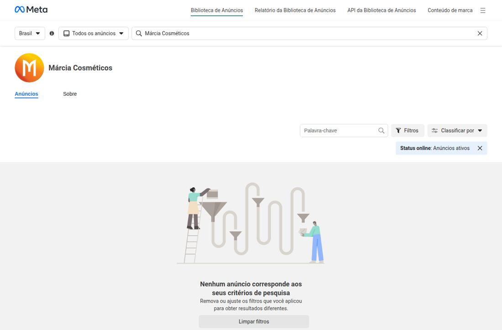
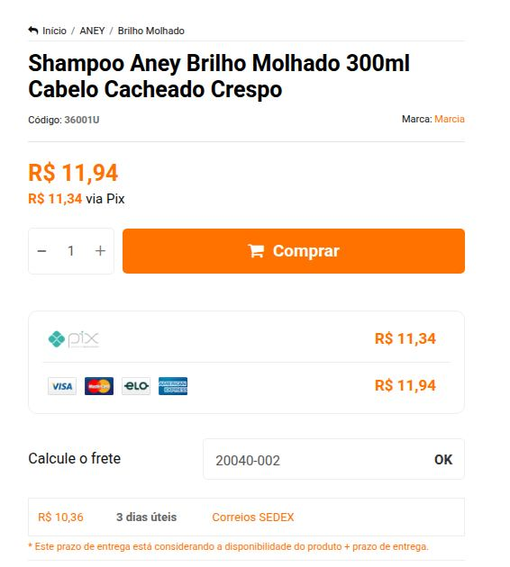
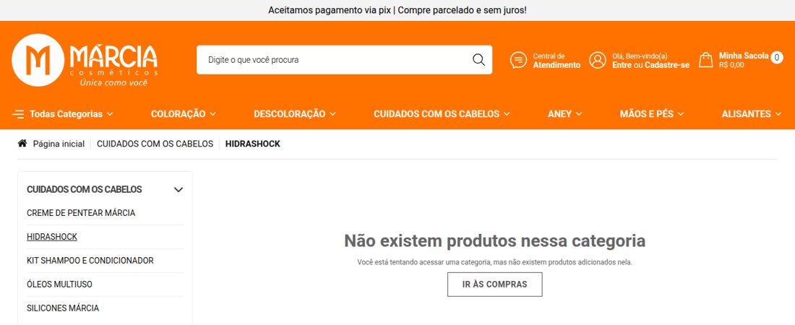

Made Brasil · Auditoria de marketing digital externa28/09/2026 · marciacosmeticos.com.br · v2
Márcia Cosméticos
A Márcia tem a instalação de uma marca que anuncia: pixels de Meta, Google Ads e TikTok, cada um em dobro. Mas hoje não há nenhum anúncio da marca no ar. E o site que receberia essa mídia cobra de frete até 2,5 vezes o preço do produto fora do Rio.
Levantamento feito só com dados públicos, em 28/09/2026: navegação real no site (desktop e celular), leitura do container público do Google Tag Manager, teste de frete para cinco capitais, Lighthouse, bibliotecas de anúncios da Meta e do Google, perfis sociais, Reclame Aqui e marketplaces. Ele amplia o documento de 24/09 e corrige seis pontos dele.
0anúncios ativos na Meta e no Google para a marca. A Salon Line tem cerca de 1.600 na Meta.
6pixels de mídia instalados para 3 plataformas (2 Meta, 2 Google Ads, 2 TikTok)
245%peso do frete PAC sobre o preço do shampoo Aney (R$ 11,94) em Manaus. Em São Paulo, 163%.
13/100nota de performance no celular (Lighthouse). A home pesa 6,3 MB em 183 requisições.
24,4 milseguidores no Instagram, contra 145 mil no Facebook. No TikTok são 79.
Placar por frente
Oito frentes, só uma acima da média
Nota de 0 a 10 dada pela Made a partir dos achados deste documento. Serve para ordenar prioridades, não é métrica de plataforma.
Mídia paga
1/10
Contas duplicadas e nenhuma campanha visível no ar.
Frete e oferta
2/10
Frete de 1,6x a 2,5x o ticket fora do RJ, sem régua nacional clara.
Mensuração
3/10
Conversão do Google Ads com gatilho amplo e eventos enviados a contas em dobro.
Redes sociais
3/10
Base no Facebook, Instagram pequeno, TikTok e YouTube praticamente vazios.
SEO e domínios
3/10
Nome errado no Google, URLs "None" e domínio antigo caindo em página bloqueada.
PDV × digital
3/10
Página "Onde encontrar" dispensa quem mora onde não há loja.
Site e velocidade
4/10
Visual limpo e produto bem descrito, mas pesado e sem dados estruturados.
Reputação
7/10
Nota 8,5 no Reclame Aqui, com reclamações concentradas em química capilar.
Benchmark · 28/09/2026
A marca tem público, mas ele ficou no Facebook
Com 145 mil seguidores no Facebook, a Márcia tem uma base comparável à de marcas médias. No Instagram e no TikTok, onde o cabelo cacheado e a coloração em casa são vendidos hoje, ela praticamente não existe. Os concorrentes anunciam sem parar, e a Márcia não anuncia.
Marca
Facebook
Instagram
TikTok
Anúncios ativos na Meta
Márcia Cosméticos
145 mil
24,4 mil
79
0
Salon Line
2,8 mi
4,6 mi
4,9 mi
~1.600
Skala
537 mil
2,1 mi
1,5 mi
38
Bio Extratus
1,5 mi
1,8 mi
578,8 mil
~56
Lola Cosmetics
922 mil
1,3 mi
1,1 mi
~35
Embelleze
3,9 mi
1,4 mi
n/d
~23
Novex (Meus Cachos)
1,1 mi
271,9 mil
n/d
~5
Beautycolor
1,2 mi
223,9 mil
n/d
0
Skafe
n/d
177,5 mil
n/d
13
Seguidores de Facebook e Instagram conforme exibidos na Biblioteca de Anúncios da Meta. TikTok pelo perfil público. Anúncios ativos no Brasil em 28/09/2026. "n/d" indica que não foi possível identificar o perfil oficial com segurança.
No frete, a referência é a Salon Line, que anuncia no topo do site "frete grátis acima de R$ 99". É uma regra nacional, simples e visível antes do carrinho.
Achados
O que encontramos, por frente
CríticoNovo
1. Seis pixels instalados e nenhuma campanha no ar
O site carrega, em toda página, dois pixels da Meta, duas contas de Google Ads e dois pixels do TikTok. Cada visita à home gera eventos PageView e ViewHome nas duas contas da Meta e view_home nas duas do Google Ads. Mesmo assim, a Biblioteca de Anúncios da Meta não mostra nenhum anúncio ativo da página oficial, e o Google Ads Transparency Center não mostra nenhum anúncio apontando para marciacosmeticos.com.br ou marciaonline.com.br.
Meta 1036792118901758Meta 847340554691511AW-16482982365AW-18326144078TikTok D9HSJPBC77UD7F80B2C0TikTok DABJ23BC77UF8GCEDQ50GA4 G-N9DMG905M5GTM-MKK6HLCD
Contas em dobro costumam ser sinal de agências anteriores que saíram sem entregar os acessos. O histórico de público e de conversões fica dividido e, às vezes, sem dono.
O TikTok tem dois pixels para um perfil com 79 seguidores e nenhum anúncio.
A premissa do documento anterior ("a Márcia paga mídia") não se confirma hoje. O que se confirma é que ela já pagou e parou, ou paga por outra página que não a oficial.

Biblioteca de Anúncios da Meta, página oficial (ID 175086359210667), filtro de anúncios ativos no Brasil, 28/09/2026.
O que fazer: levantar na reunião quem é dono de cada conta e Business Manager. Consolidar em uma conta por plataforma, em nome da Márcia, e remover os pixels órfãos antes de retomar qualquer verba.
CríticoNovo
2. A conversão do Google Ads pode contar compras que não aconteceram
O container público do GTM (versão 8) tem só cinco tags. A de conversão do Google Ads (AW-18326144078) dispara em qualquer URL que contenha "checkout", inclusive em mudanças de tela sem recarregar a página. Na Loja Integrada, "checkout" aparece em todas as etapas, do carrinho à confirmação. O valor e o número do pedido são lidos de elementos que só existem na tela de pedido concluído.
Resultado provável: início de checkout registrado como compra, com valor vazio ou zero. Isso distorce o custo por venda e o aprendizado dos lances automáticos.
Conversões otimizadas e relatório de produtos estão desligados na tag.
O vínculo entre os domínios marciacosmeticos.com.br e marciaonline.com.br está configurado. Isso responde à dúvida levantada no documento anterior.
O GA4 dispara um único page_view por página, então não há contagem dupla ali.
O que fazer: restringir o gatilho à página de pedido concluído, usar o evento de compra nativo da plataforma com valor e ID do pedido, e ligar as conversões otimizadas.
Crítico
3. O frete custa mais que o produto fora do Rio
Cotamos o Shampoo Aney Brilho Molhado 300 ml (R$ 11,94) na calculadora da página de produto. O site só oferece Correios.
Destino (CEP central)
PAC
Prazo
SEDEX
PAC ÷ produto
Rio de Janeiro
n/d
3 dias
R$ 10,36
87% (SEDEX)
São Paulo
R$ 19,47
7 dias
R$ 29,44
163%
Porto Alegre
R$ 21,82
9 dias
R$ 41,22
183%
Salvador
R$ 24,34
8 dias
R$ 52,99
204%
Manaus
R$ 29,20
20 dias
R$ 61,84
245%
Cotação feita em 28/09/2026 com 1 unidade. Prazos em dias úteis, como informados pelo site.
A home promete "Frete grátis para RJ" sem dizer a partir de qual valor.

No mesmo site, 1 shampoo para o Centro do Rio (20040-002) sai por R$ 10,36.
Existem uma régua de frete grátis (pop-up "Quer FRETE GRÁTIS? Digite o seu CEP e saiba quanto falta!"), um combo com 10% de desconto na página do produto e o Kit Cachos Perfeitos. As alavancas estão lá, mas escondidas: nenhuma mostra um valor mínimo antes do carrinho.
Na listagem do Mercado Livre, produtos Márcia aparecem com frete grátis para o comprador. A consumidora tem um bom motivo para não comprar no site.
O que fazer: definir uma régua nacional única (a Salon Line usa R$ 99) e mostrá-la no topo de todas as páginas. Montar kits por rotina ("cachos completo", "coloração em casa") entre R$ 60 e R$ 110, e só voltar a anunciar produto avulso para quem já está no RJ.
Crítico
4. Nome errado no Google, menu quebrado e domínio antigo bloqueado
O título de todas as páginas termina em "Marcia Online", e o da home é só isso. A home não tem meta description e tem o H1 vazio.
19 links do menu apontam para URLs geradas como /categoria/None-2023-06-09-11-53-04.html, /None e /None---. A categoria HIDRASHOCK abre vazia e está liberada para indexação.
A home e a página de produto não têm dados estruturados (schema.org/Product). Sem eles, o Google não mostra preço, estoque nem nota nos resultados. Salon Line, Bio Extratus e Skafe já publicam dados estruturados em seus sites.
URLs antigas do marciaonline.com.br (da loja anterior, no formato /index.php/finalizadores/…) ainda aparecem no Google. O redirecionamento mantém o caminho antigo, e o firewall da Loja Integrada responde com "Seu request foi bloqueado por segurança".
Sete banners da home e a bio do TikTok ainda apontam para o domínio antigo.
Dois produtos têm o mesmo nome, "Creme de Finalização Aney Óleo de Coco", um a R$ 13,94 e outro a R$ 30,74. A diferença (300 ml ou 1 L) não aparece no nome.

Categoria do menu principal, aberta pela URL "None-2023-06-09".Destino de uma URL antiga do marciaonline.com.br que ainda aparece na busca do Google.
O que fazer: trocar "Marcia Online" por "Márcia Cosméticos" no template, refazer o menu com categorias reais, aplicar noindex ou remover as categorias vazias, mapear as URLs antigas do marciaonline para os produtos novos (redirecionamento 301 um a um) e ativar o schema de produto.
ImportanteNovo
5. Site pesado demais para o celular
O Lighthouse em modo celular deu 13/100 de performance, 66 de acessibilidade, 75 de boas práticas e 77 de SEO. A nota exata varia com a rede do teste, mas a causa é estrutural:
A home tem 6,3 MB e 183 requisições. Os banners são PNG de 1920 px enviados também para o celular, com economia estimada de 2,7 MB.
Um vídeo do YouTube embutido na home carrega cerca de 1 MB antes de qualquer clique.
Os ícones de categoria vêm do servidor de um fornecedor (cacalutia.com.br/clientes/marcia/…). Se esse contrato acabar, a home fica sem ícones.
Há 28 imagens sem texto alternativo, e banners com alt "BANNER 6", "BANNER 8" e "BANNER 10".
O que fazer: converter os banners para WebP em versões para celular, trocar o vídeo embutido por uma imagem com link, hospedar os ícones na própria loja e retirar os pixels duplicados. Hoje os scripts de Meta, Google e TikTok somam cerca de 1 MB na home.
ImportanteNovo
6. Redes sociais: público herdado, canal novo abandonado
Facebook com 145 mil seguidores e Instagram com 24,4 mil. A base é de outra época e não migrou.
TikTok com 79 seguidores e 500 curtidas. O canal do YouTube tem 8 inscritos.
A melhor frase da marca, "+ de 90 anos cuidando da sua beleza", só aparece na bio do TikTok. A página "Quem somos" fala de missão, valores e de um parque fabril de 20.000 m², mas não conta a história.
Perfil oficial no TikTok: 79 seguidores, bio com "90 anos" e link para o domínio antigo.
O que fazer: tratar a tradição como o ativo central da marca (90 anos, fábrica própria, preço justo) e o Instagram e o TikTok como canais de tutorial: teste de mecha, descoloração segura, finalização de cachos.
ImportanteNovo
7. Reputação boa, com um risco na química
No Reclame Aqui, nos 12 meses até 31/08/2026: nota 8,5, 25 reclamações, 96% respondidas, 80% resolvidas, resposta média em 1 dia e 9 horas. A empresa não é verificada.
As reclamações se concentram em descolorante e tintura: irritação na pele e nos olhos, cor diferente da prometida, "corpo estranho" no frasco.
Uma reclamação diz que o WhatsApp de atendimento não funciona. O link de WhatsApp do site usa o número 5502199118301, com um zero antes do DDD e só oito dígitos, formato que o WhatsApp não reconhece.
O que fazer: corrigir o número do WhatsApp, verificar a empresa no Reclame Aqui e publicar conteúdo de uso seguro (teste de mecha e de alergia) nas páginas de coloração e descoloração. Isso reduz a reclamação e melhora a conversão da categoria.
ImportanteNovo
8. Marketplaces sem dono
Produtos Márcia são vendidos na Amazon e no Mercado Livre por terceiros, com frete grátis em vários anúncios. Não identificamos loja oficial da marca em nenhum dos dois.
A loja "marcia_cosmeticos" na Shopee aparece como "não está mais ativa".
Aqui a verificação foi parcial: o Mercado Livre e a Magalu bloquearam a navegação automatizada e exigem checagem manual.
O que fazer: decidir com a Navarro se o marketplace é canal oficial ou só de revenda. Nos dois casos, alinhar preço mínimo e conteúdo das fichas para não competir com o próprio site.
Importante
9. PDV e digital se ignoram (mantido do documento de 24/09)
Onze estados aparecem com "Nenhum ponto de venda cadastrado", e a página pede contato em vez de oferecer a loja online.
A lista é em texto corrido, sem busca por CEP. Há erros de cadastro, como um DDD 95 listado no Amazonas e Brasília dentro de Goiás.
A página publica e-mails pessoais de lojistas (Gmail e Hotmail). Isso é um risco de LGPD, não só de UX.
O que fazer: nos estados sem PDV, trocar a mensagem por "Compre online com frete para o seu CEP" e um link para o kit mais vendido. Tirar os e-mails pessoais do ar esta semana.
Revisão do documento de 24/09
Seis pontos que mudam com dados públicos
O documento dizia
O que os dados mostram
"A Márcia já paga, ou pagou, mídia de performance."
Há contas instaladas, mas nenhum anúncio ativo na Meta nem no Google em 28/09.
Pixel da Meta "depende de acesso".
É visível sem acesso: dois pixels ativos, além de duas contas de Google Ads e dois pixels de TikTok.
Configuração entre domínios não confirmada.
O GTM tem o vínculo configurado para marciacosmeticos.com.br e marciaonline.com.br.
Frete não é comunicado em home e produto.
A home diz "Frete grátis para RJ" e o produto tem calculadora. O problema é o valor e a falta de régua clara.
"Há apenas um kit à venda."
Há também um combo de 4 itens com 10% na página de cada produto Aney. Falta dar visibilidade a ele.
"Não há WhatsApp de atendimento."
Há um link, mas com número em formato inválido. Uma reclamação no Reclame Aqui confirma a falha.
Plano
Arrumar a casa antes de voltar a anunciar
30 dias
Mapear donos de contas e consolidar um pixel e uma conta por plataforma.
Corrigir o gatilho de conversão do Google Ads e ligar as conversões otimizadas.
Corrigir título, menu "None", categorias vazias e número do WhatsApp.
Publicar a régua de frete grátis nacional no topo do site.
Tirar do ar os e-mails pessoais da página "Onde encontrar".
60 dias
Redirecionar uma a uma as URLs antigas do marciaonline.
Ativar schema de produto e avaliações na página de produto.
Lançar kits por rotina com preço acima da régua de frete.
Otimizar imagens e retirar o vídeo embutido da home.
Publicar conteúdo de uso seguro nas categorias de química.
90 dias
Retomar mídia com funil medido: remarketing no RJ, kits no Brasil.
Instagram e TikTok com série de tutoriais e UGC de cachos.
Página "Onde encontrar" com busca por CEP e saída para a loja online.
Definir política de marketplace (loja oficial ou preço mínimo).
Com acesso concedido, o próximo passo é medir o tamanho de cada vazamento: GA4 (funil e abandono por etapa), histórico das contas de Google Ads e Meta, Search Console (consultas e páginas antigas indexadas) e o painel da Loja Integrada (ticket médio e frete por região).